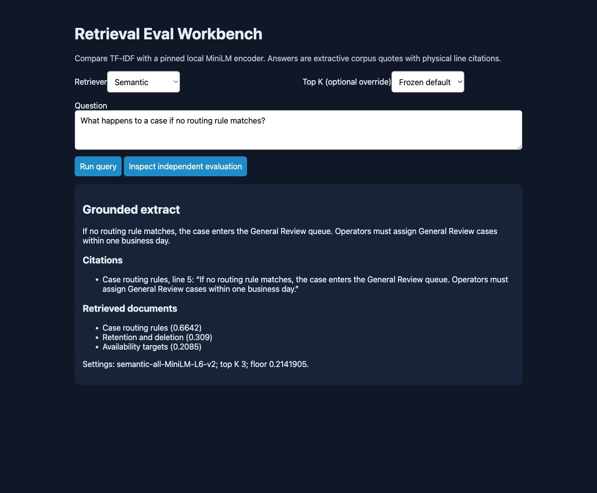

Search evidence. Inspect the answer.
Compare lexical and dense retrieval on a licensed corpus, with immutable evaluation inputs and visible citation failures.
Static evidence walkthrough. This is a published record of local measured runs, not a live backend. The complete runnable service is in the repository.
What was verified
- Pinned MiniLM revision and 11 snapshot hashes; exact physical citation checks
- Independent questions frozen after implementation and before execution
- First-run rates frozen for regression; a named metric drop rejects the gate
- Linux CPU container and real lexical/semantic queries; desktop/mobile results and expanded failures

Run the project
git clone https://github.com/RoshanDewmina/retrieval-eval-workbench cd retrieval-eval-workbench uv sync --frozen make test make demo
Limits that matter
- 10 synthetic documents and 20 purposively selected questions are not statistically representative
- Both methods produced 0/2 complete multi-document answers; valid quotations can be irrelevant
- First-run set is now exposed for regression, never relabeled a fresh evaluation
- Static public evidence; full semantic backend needs sufficient isolated CPU/memory and pinned model cache
Independent review: Independent Astra correction review approved; root resolved and verified final results/reference/container integration. Source at page generation: 2a38870c0c98b1b995fe6d1d64293601ca2a127e. Software verification does not prove personal mastery; interview understanding and resume wording remain pending user review.
External spending for this portfolio remains $0. Local hardware/electricity cost unmeasured. Synthetic workloads do not establish production capacity.